Damian
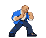
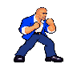
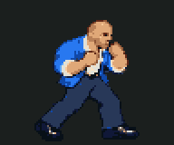
In-game capture and reference
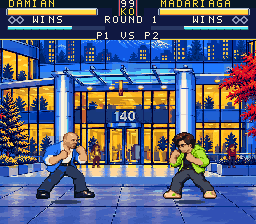
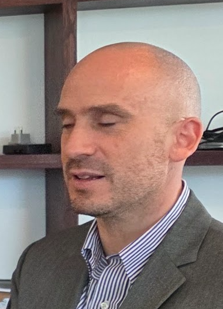
Ivo
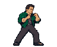
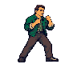
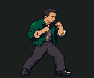
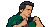
In-game capture and reference
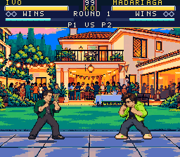
Cristobal
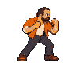
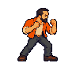
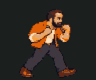
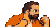
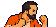
In-game capture and reference
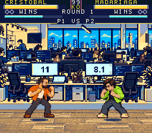
Cote
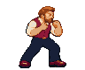
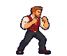
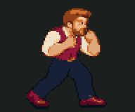
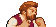
In-game capture and reference
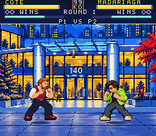
Negger
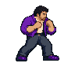
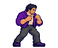
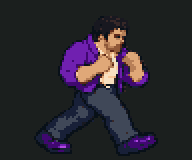
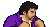
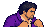
In-game capture and reference
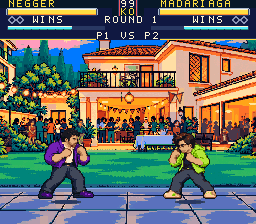
David

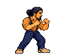
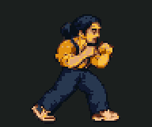
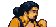

In-game capture and reference
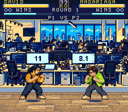
Fernando
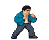
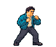
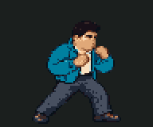
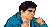
In-game capture and reference
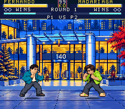
Cristian
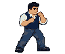
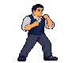
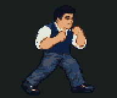
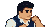
In-game capture and reference
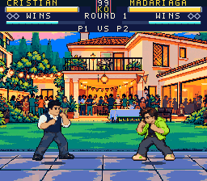
Madariaga
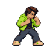
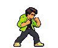
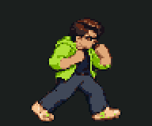
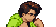
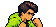
In-game capture and reference
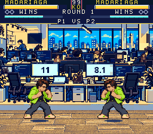
Reston
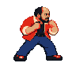
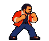
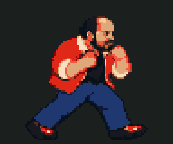